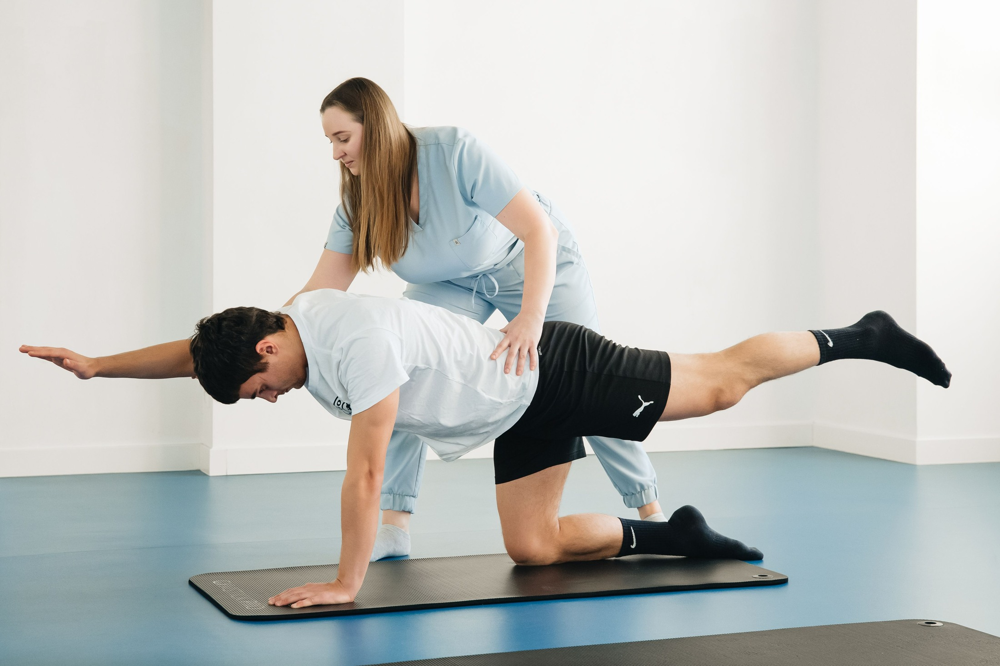
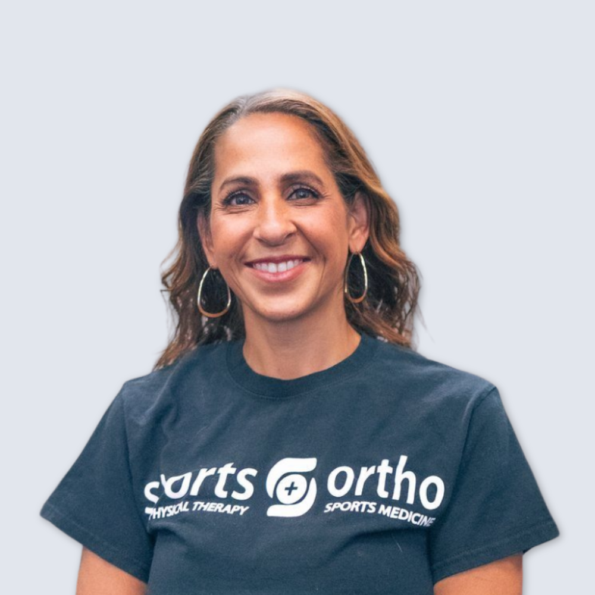

People first. Always.
Real people.. Meet the people who listen to your story, understand your goals and help you take your next step.
Meet your team ↓ 
Illustrative care photography Family-owned since 2003 10 Chicago-area clinics Care built around you

Dahlia Fahmy Founder · Physical Therapist
A personal beginning
Led by a therapist.
“I started Sports & Ortho in 2003 to deliver the kind of care I felt was missing, one-on-one and genuinely hands-on, and that is still the standard every clinic is held to.” Dahlia Fahmy, founder
Get to know Dahlia Find a familiar face
Your team. From your first conversation to your time in the clinic, get to know the people behind your care.
Find a team member ClinicAll clinics Beverly Bridgeport Edison Park Evanston Glenview Highland Park Lake Forest Lincoln Park Midway Sauganash RoleAll roles Leadership & clinic managers Physical therapists Occupational therapists Physical therapist assistants Operations & support
Dahlia Fahmy Founder · Physical Therapist
Glenview
View profile
Colleen Pirkle VP of Operations
Chris Schmalz Physical Therapist · Clinic Manager
Edison Park
View profile Christine Moorehouse Physical Therapist · Clinic Manager
Evanston
View profile
Dana Brewbaker Physical Therapist Assistant · Clinic Manager
Beverly
View profile
Mansi Joshi Physical Therapist · Clinic Manager
Bridgeport
View profile Rachel Winter Physical Therapist · Clinic Manager
Highland Park
View profile
Tim Dunleavy Physical Therapist · Clinic Manager
Lincoln Park
View profile
Travis Robertson Physical Therapist · Clinic Manager
Sauganash
View profile
Lauren Aguirre Physical Therapist
Beverly · Midway
View profile
Pam Platt Physical Therapist
Glenview · Lake Forest
View profile
Daria Lending Occupational Therapist
Evanston · Glenview
View profile Gillian Toomey-Wearden Occupational Therapist
Edison Park · Lincoln Park
View profile Paul Parpart Occupational Therapist
Beverly · Bridgeport
View profile Brent Lukemeyer Physical Therapist Assistant
Glenview
View profile
Erin Enochs Physical Therapist Assistant
Sauganash
View profile
Nicole Pineda Physical Therapist Assistant
Edison Park
View profile
Rachel Davis Physical Therapist Assistant
Edison Park
View profile
Dawn Pigott Billing
Bridgeport
KaLyn Markley Front Desk
Beverly
Liz Buenfil Front Desk
Beverly
Lori Gonzalez Front Office
Cameron Mallory Marketing Coordinator
Olga Popazu Social Media Coordinator
No matching team members. Try another name, clinic or role.
See the full team Show more team members +
Looking for a particular service? Explore care and clinic availability.
Your next step
Let’s get to Tell us what you’d like to get back to.
Request an Appointment